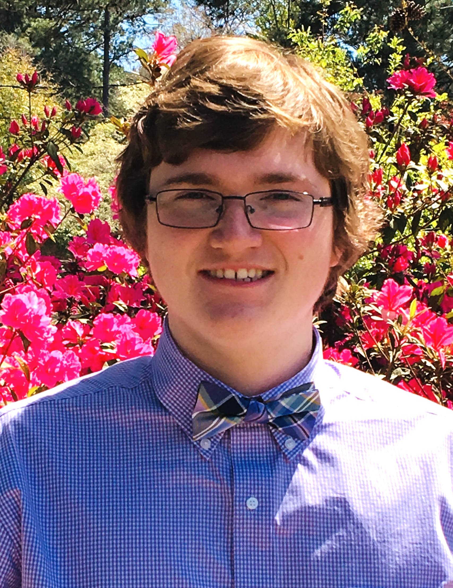

My name is Jackson Riley Daugherty, and I was born on May 1st, 2002. I have lived in Florence my entire life. I am an only-child and I have six cats!

I attended West Florence High School and graduated in 2020. Since then I briefly attended Francis Marion University before ultimately deciding to come to Florence-Darlington.
In fact, I had actually been taking a break from education for a few years before making this decision, but now that I am here I feel much more confident and fulfilled than I ever have been before about school.
I have been employed at McLeod Regional Medical Center here in Florence as a patient transporter for about four years now, but I have never wanted to pursue a serious career in the medical field.
I have always had a passion for all-things programming and I believe I would best excel in this career path.
I have always loved computers. I began to dabble in programming when I was about 9 or 10 with Roblox,
a multiplayer game where you can create entire games within its engine that can be programmed using Lua as a scripting language.
Of course, then, it goes without saying that I also like video games.
In fact, I still try to make things with Roblox from time to time, although partly because of the amount of time I've invested into it!
That being said, though, I do not consider my dream job being a video game developer.
If I ever did, I think it would be as an independent, something which nowadays is a much more feasible career path than it might have been several years ago.
One of my favorite games, Undertale, was programmed solely by one person in his spare time and later went on to be a massive success, even spawning a sequel.
Other than that, another one of my favorite hobbies is biking. I get a lot of my exercise from my job, but when the weather is nice I love to ride around and feel the wind in my hair.
I have varying levels of experience in several programming languages. My strongest would probably be Lua, then followed by C.
I also have some knowledge in C++, C#, Java, and a small bit of Python.
You can find out more about my experience on the Skills page.
As mentioned before, my main goal is to find a career in programming, or at least computing in some higher capacity.
What exactly that might be I am not certain yet, although once I complete this web design course a huge door will open for me, naturally.
I always love to learn more about computing so I doubt this will be the last time I am in school. That is, I might pursue higher education
at a later time if I think it is necessary.